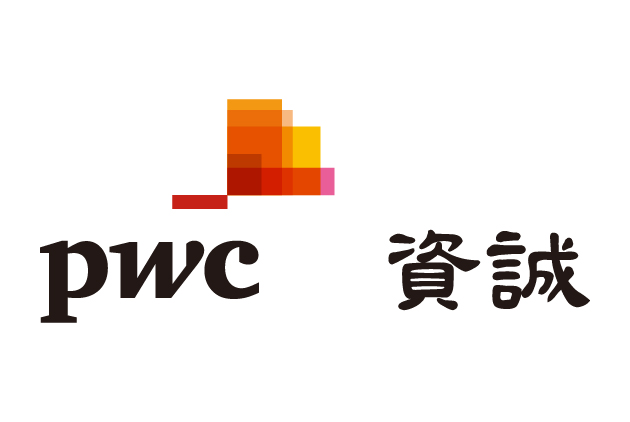

未來醫療
大齡時代，如何透過AI先進科技，創造醫療場域裡的新價值？


中國新創Airdoc 用AI讓智慧醫療無所不在
坐在機器前，讓光掃過你的瞳孔，不到2分鐘，檢驗報告就直接傳進你手機。中國新創公司Airdoc正用AI顛覆醫療業。他們餵系統吃幾十萬張視網膜照片，教眼底攝影機秒診斷出疾病，更跨出醫院，把專業經驗帶進醫療資源缺乏的地區。
MORE
英國已經把健保資料變AI金礦，台灣為何還是坐在數據上的乞丐？
創造出AlphaGo的先進技術企業DeepMind，運用英國病歷訓練AI；2年前曾爆發醫護大罷工的英國，也用AI來解決健保難題。和台灣一樣有全民健保的英國，已經利用資料發展醫療AI產業的世紀黑金；成功優勢，就在3大關鍵裡。
MORE
人工智慧如何用健保資料，為台灣醫療困境找出路？︱未來城市@天下
許多外國人稱讚台灣健保「好用又便宜」，但健保長期壓低成本的後果，就是醫師過勞，可能導致醫療品質下降，甚至醫病關係緊張。如何利用長年累積的龐大健保資料庫，透過人工智慧，把醫療流程變得更有效率，減輕醫護人員負擔？
MORE
人工智慧如何減輕醫師負擔，改善醫病關係？︱未來城市@天下
病人去醫院照一次胸腔斷層掃描，只要幾分鐘；但一個病人，卻會產生300張醫療影像。台大醫院一年，就產生600多萬張片子，20幾位放射科醫師得全部仔細看過，才敢下筆寫報告。這個真實案例，台大醫院與台灣人工智慧實驗室如何解決？
MORE